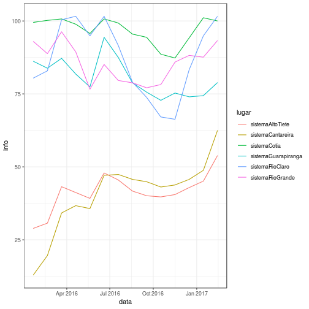
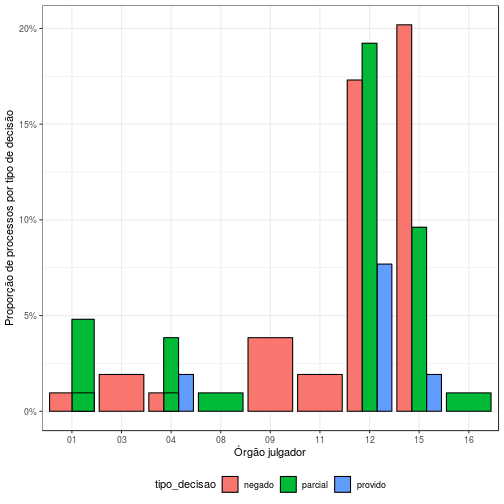

Web Scraping
Pacotes httr, xml2 e rvest
Esses são os três pacotes mais modernos do R utilizados para fazer web scraping.
O pacote xml2 tem a finalidade de estruturar arquivos HTML ou XML de forma eficiente,
tornando possível a obtenção de tags e seus atributos dentro de um arquivo.
Já o pacote httr é responsável por realizar requisições web para
obtenção das páginas de interesse,
buscando reduzir ao máximo a complexidade da programação.
O pacote rvest é escrito sobre os dois anteriores e por isso
eleva ainda mais o nível de especialização para raspagem de dados.
As características dos pacotes implicam na seguinte regra de bolso.
Para trabalhar com páginas simples,
basta carregar o rvest e utilizar suas funcionalidades.
Caso o acesso à página exija ações mais complexas e/ou
artifícios de ferramentas web, será necessário utilizar o httr.
O xml2 só será usado explicitamente nos casos raros em que
a página está em XML, que pode ser visto como uma generalização do HTML.
Esses pacotes não são suficientes para acessar todo tipo de conteúdo da web.
Um exemplo claro disso são páginas em que o conteúdo é produzido por javascript,
o que acontece em muitos sites modernos.
Para trabalhar com esses sites, é necessário realmente “simular” um navegador que
acessa a página web. Uma das melhores ferramentas para isso é o selenium.
Não discutiremos selenium nesse curso, mas caso queira se aprofundar, acesse
aqui.
Sessões e cookies
No momento que acessamos uma página web, nosso navegador baixa alguns arquivos que “identificam” nosso acesso à página. Esses arquivos são chamados cookies e são usados pelos sites para realizar diversas atividades, como carregar uma página pré-definida pelo usuário caso este acesse o site pela segunda vez.
O httr e por consequência o rvest já guardam esses cookies de forma automática,
de forma que o usuário não precise se preocupar com isso.
Em casos raros, para construir o web scraper é necessário modificar esses cookies.
Nesses casos, estude a função cookies() do httr.
GET e POST
Uma requisição GET envia uma url ao servidor, possivelmente com alguns parâmetros nessa url
(que ficam no final da url depois do ?). O servidor, por sua vez, recebe essa url,
processa os parâmetros e retorna uma página HTML para o navegador.
A requisição POST, no entanto, envia uma url não modificada para o servidor,
mas envia também uma lista de dados preenchidos pelo usuário,
que podem ser números, textos ou até imagens.
Na maioria dos casos, ao submeter um formulário de um site,
fazemos uma requisição POST.
O httr possui os métodos GET e POST implementados e são muito similares.
A lista de parâmetros enviados pelo usuário pode ser armazenado numa list nomeada,
e adicionado ao GET pelo parâmetro query ou no POST pelo parâmetro body.
Veremos exemplos disso mais adiante.
Outras funções do httr
Outras funções úteis:
write_disk()para escrever uma requisição direto em disco, além de guardar na memória RAM.config()para adicionar configurações adicionais. Por exemplo, quando acessar uma páginahttpscom certificados inadequados numa requisição GET, rodeGET('https://www...', config(ssl_verifypeer=F)).oauth_app()para trabalhar com APIs. Não discutiremos conexão com APIs nesse curso, mas é um importante conceito a ser estudado.
Principais funções do rvest
library(rvest)
## Loading required package: xml2
Para acessar páginas da web:
html_session()abre uma sessão do usuário (baixa página, carrega cookies etc).follow_link(),jump_to()acessa uma página web a partir de um link (tag<a>) ou url.html_form()carrega todos os formulários contidos numa página.set_value()atribui valores a parâmetros do formulário.submit_form()submete um formulário obtido emhtml_form.
Para trabalhar com arquivos HTML:
read_html()lê o arquivo HTML de forma estruturada e facilita impressão.html_nodes()cria uma lista com os nós identificados por uma busca em CSS path ou XPath.html_node()é um caso especial que assume que só será encontrado um resultado.html_text()extrai todo o conteúdo de um objeto e retorna um texto.html_table()extrai o conteúdo de uma<table>e transforma em umdata_frame.html_attr()extrai um atributo de uma tag, por exemplohrefda tag<a>.
CSS path e XPath
O CSS path e o XPath são formas distintas de buscar tags dentro de um documento HTML. O CSS path é mais simples de implementar e tem uma sintaxe menos verborrágica, mas o XPath é mais poderoso. A regra de bolso é tentar fazer a seleção primeiro em CSS e, caso não seja possível, implementar em XPath.
Esses paths serão mostrados en passant durante o curso,
mas não serão abordados em detalhe.
Caso queira se aprofundar no assunto,
comece pela ajuda da função ?html_nodes.
APIs com httr
O httr foi criado pensando-se nas modernas APIs que vêm sendo desenvolvidas
nos últimos anos. O httr já tem métodos apropriados para trabalhar com
Facebook, Twitter e Google, entre outros.
Para um guia completo de como utilizar APIs no R, acesse esse tutorial. Um exemplo de pacote que utiliza API usando esse tutorial melhores práticas pode ser acessado aqui.
Exemplo 1: chance de gol
Parte 0: pacotes
library(tibble)
library(httr)
library(rvest)
library(dplyr)
library(ggplot2)
Parte 1: acessando a página de um ano
ano <- 2015
cdg_url <- sprintf('http://www.chancedegol.com.br/br%02d.htm', ano - 2000)
cdg_html <- cdg_url %>%
httr::GET() %>%
httr::content('text', encoding = 'latin1') %>%
xml2::read_html() %>%
rvest::html_node('table')
Parte 2: cores da tabela
cores <- cdg_html %>%
html_nodes(xpath = '//font[@color="#FF0000"]') %>%
html_text()
Parte 3: nomes e estrutura da tabela
cdg_data <- cdg_html %>%
html_table(header = TRUE) %>%
setNames(c('dt_jogo', 'mandante', 'placar', 'visitante',
'p_mandante', 'p_empate', 'p_visitante')) %>%
mutate(p_vitorioso = cores) %>%
as_tibble() %>%
mutate(result = 'OK')
Parte 4: colocando dentro de uma função
cdg_ano <- function(ano) {
cdg_url <- sprintf('http://www.chancedegol.com.br/br%02d.htm', ano - 2000)
cdg_html <- cdg_url %>%
GET() %>%
content('text', encoding = 'latin1') %>%
read_html() %>%
html_node('table')
cores <- cdg_html %>%
html_nodes(xpath = '//font[@color="#FF0000"]') %>%
html_text()
cdg_data <- cdg_html %>%
html_table(header = TRUE) %>%
setNames(c('dt_jogo', 'mandante', 'placar', 'visitante',
'p_mandante', 'p_empate', 'p_visitante')) %>%
mutate(p_vitorioso = cores) %>%
as_tibble() %>%
mutate(result = 'OK')
cdg_data
}
Parte 5: vetorizando anos
cdg_anos <- function(anos) {
cdg_ano_safe <- failwith(tibble(result = 'erro'), cdg_ano)
anos %>%
setNames(anos) %>%
purrr::map_df(cdg_ano_safe, .id = 'ano')
}
d_cdg <- cdg_anos(c(2014, 2015))
## Warning: Deprecated: please use `purrr::possibly()` instead
Exemplo 2: Sabesp
Passo 0: pacotes
library(tibble)
library(httr)
library(rvest)
library(lubridate)
library(stringr)
library(purrr)
library(dplyr)
Passo 1: acessa página principal
link <- 'http://www2.sabesp.com.br/mananciais/DivulgacaoSiteSabesp.aspx'
txt <- GET(link)
Passo 2: função que pega viewstate ou eventvalidation da página
# tipo pode ser "#__VIEWSTATE" ou "#__EVENTVALIDATION"
pegar_tags <- function(req, tipo) {
req %>%
content('text') %>%
read_html() %>%
html_node(tipo) %>%
html_attr('value')
}
# exemplo
viewstate <- pegar_tags(txt, "#__VIEWSTATE")
eventval <- pegar_tags(txt, "#__EVENTVALIDATION")
Passo 3: dados da requisição
sabesp_dados <- function(data, vs, ev) {
data <- as.Date(data)
dados <- list(cmbDia = lubridate::day(data),
cmbMes = lubridate::month(data),
cmbAno = lubridate::year(data),
Imagebutton1.x = '0',
Imagebutton1.y = '0',
'__VIEWSTATE' = vs,
'__EVENTVALIDATION' = ev,
'__VIEWSTATEENCRYPTED' = '')
}
# exemplo
data <- '2017-02-14'
form <- sabesp_dados(data, viewstate, eventval)
# requisicao de busca
result <- POST(link, body = form)
Passo 4: pegar nomes dos sistemas
sabesp_nm_sistemas <- function(r) {
nomes <- r %>%
content('text') %>%
read_html() %>%
html_nodes('img') %>%
html_attr('src') %>%
keep(~str_detect(.x, '\\.gif$')) %>%
map_chr(~str_match(.x, '/(.+)\\.gif')[, 2])
}
Passo 5: pegar conteúdo da página
sabesp_conteudo <- function(r) {
nomes <- sabesp_nm_sistemas(r)
r %>%
content('text') %>%
read_html() %>%
html_node('#tabDados') %>%
html_table(fill = TRUE) %>%
select(titulo = X1, info = X2) %>%
filter(titulo != '') %>%
mutate(lugar = rep(nomes, each = 4)) %>% #View
mutate(info = info %>%
str_extract('[-0-9, %m]+$') %>%
str_replace_all('^[^:]+:', '') %>%
str_replace_all(',', '.') %>%
str_replace_all('[^0-9.]', '') %>%
as.numeric()) %>%
as_tibble()
}
# exemplo
sabesp_conteudo(result)
## # A tibble: 24 x 3
## titulo info lugar
## <chr> <dbl> <chr>
## 1 índice armazenado 62.5 sistemaCantareira
## 2 pluviometria do dia 0.0 sistemaCantareira
## 3 pluviometria acumulada no mês 50.1 sistemaCantareira
## 4 pluviometria média histórica do mês 203.4 sistemaCantareira
## 5 índice armazenado 53.9 sistemaAltoTiete
## 6 pluviometria do dia 0.0 sistemaAltoTiete
## 7 pluviometria acumulada no mês 54.0 sistemaAltoTiete
## 8 pluviometria média histórica do mês 194.9 sistemaAltoTiete
## 9 índice armazenado 78.9 sistemaGuarapiranga
## 10 pluviometria do dia 3.4 sistemaGuarapiranga
## # ... with 14 more rows
Passo 5: colocar tudo numa função
sabesp_dia <- function(data) {
link <- 'http://www2.sabesp.com.br/mananciais/DivulgacaoSiteSabesp.aspx'
txt <- GET(link)
viewstate <- pegar_tags(txt, "#__VIEWSTATE")
eventval <- pegar_tags(txt, "#__EVENTVALIDATION")
form <- sabesp_dados(data, viewstate, eventval)
result <- POST(link, body = form)
d_res <- sabesp_conteudo(result) %>%
mutate(result = 'OK')
return(d_res)
}
# exemplo
sabesp_dia('2017-02-14')
## # A tibble: 24 x 4
## titulo info lugar result
## <chr> <dbl> <chr> <chr>
## 1 índice armazenado 62.5 sistemaCantareira OK
## 2 pluviometria do dia 0.0 sistemaCantareira OK
## 3 pluviometria acumulada no mês 50.1 sistemaCantareira OK
## 4 pluviometria média histórica do mês 203.4 sistemaCantareira OK
## 5 índice armazenado 53.9 sistemaAltoTiete OK
## 6 pluviometria do dia 0.0 sistemaAltoTiete OK
## 7 pluviometria acumulada no mês 54.0 sistemaAltoTiete OK
## 8 pluviometria média histórica do mês 194.9 sistemaAltoTiete OK
## 9 índice armazenado 78.9 sistemaGuarapiranga OK
## 10 pluviometria do dia 3.4 sistemaGuarapiranga OK
## # ... with 14 more rows
sabesp_dias <- function(datas) {
sabesp_dia_safe <- failwith(tibble(result = 'erro'), sabesp_dia)
datas %>%
setNames(as.character(datas)) %>%
purrr::map_df(sabesp_dia_safe, .id = 'data')
}
# exemplo
dts <- as.Date('2017-02-14') - lubridate::days(0:13 * 30)
d_sabesp <- sabesp_dias(dts)
## Warning: Deprecated: please use `purrr::possibly()` instead
library(ggplot2)
d_sabesp %>%
filter(titulo == 'volume armazenado') %>%
mutate(data = ymd(data)) %>%
ggplot(aes(x = data, y = info, colour = lugar)) +
geom_line() +
theme_bw()
## Warning: All formats failed to parse. No formats found.

Case study: câmaras TJSP (jurimetria)
Melhores práticas para web scraping
Esta seção contém algumas melhores práticas na contrução de ferramentas no R que baixam e processam informações de sites disponíveis na web. O objetivo é ajudar o jurimetrista a desenvolver programas que sejam fáceis de adaptar no tempo.
É importante ressaltar que só estamos trabalhando com páginas que são acessíveis publicamente. Caso tenha interesse e “raspar” páginas que precisam de autenticação, recomendamos que estude os termos de uso do site.
Para ilustrar este texto, usaremos como exemplo o código utilizado no trabalho das câmaras, que acessa o site do Tribunal de Justiça de São Paulo para obter informações de processos judiciais. Trabalharemos principalmente com a Consulta de Jurisprudência e a Consulta de de Processos de Segundo Grau do TJSP.
Sugerimos como melhores práticas dividir todas as atividades em três tarefas principais: i) buscar; ii) coletar e iii) processar. Quando já sabemos de antemão quais são as URLs que vamos acessar, a etapa de busca é desnecessária.
Na maior parte dos casos, deixar os algoritmos de coleta e processamento dos dados em funções distintas é uma boa prática pois aumenta o controle sobre o que as ferramentas estão fazendo, facilita o debug e a atualização. Por outro lado, em alguns casos isso pode tornar o código mais ineficiente e os arquivos obtidos podem ficar pesados.
Diferença entre buscar, baixar e processar.
Buscar documentos significa, de uma forma geral, utilizar ferramentas de
busca (ou acessar links de um site) para obter informações de uma nova
requisição a ser realizada. Ou seja, essa etapa do scraper serve para
“procurar links” que não sabíamos que existiam previamente. Isso será
resolvido através da função cjsg.
Baixar documentos, no entando, significa simplesmente acessar páginas
pré-estabelecidas e salvá-las em disco. Em algumas situações, os documentos
baixados (depois de limpos) podem conter uma nova lista de páginas a serem
baixadas, formando iterações de coletas. A tarefa de baixar documentos
pré-estabelecidos será realizada pela função cposg.
Finalmente, processar documentos significa carregar dados acessíveis em disco e
transformar os dados brutos uma base tidy.
Usualmente separamos a estruturação em duas etapas:
i) transformar arquivos não-estruturados em um arquivos semi-estruturados
(e.g. um arquivo HTML em uma tabela mais um conjunto de textos livres) e
ii) transformar arquivos semi-estruturados em uma base analítica (estruturada).
A tarefa de processar as páginas HTML será realizada pelas
funções parse_cjsg e parse_cpopg.
Na pesquisa das câmaras, seguimos o fluxo
buscar -> coletar -> processar -> coletar -> processar
para conseguir nossos dados.
Buscar documentos
A tarefa de listar os documentos de interesse é realizada acessando resultados de um formulário. Dependendo do site, será necessário realizar:
- Uma busca e uma paginação;
- Uma busca e muitas paginações;
- Muitas buscas e uma paginação por busca;
- Muitas buscas e muitas paginações por busca.
No TJSP temos uma busca e muitas paginações. Acesse a página do e-SAJ, digite “acordam” no campo “Pesquisa Livre” e clique em “Pesquisar”, para ter uma ideia de como é essa página.
A página (acessada no dia 2017-10-10) é uma ferramenta de busca com vários campos, que não permite pesquisa com dados em branco. Na parte de baixo o site mostra uma série de documentos, organizados em páginas de vinte em vinte resultados.
Para realizar a coleta, precisamos de duas funções principais,
uma que faz a busca e outra que acessa uma página específica
(que será executada várias vezes).
Utilizaremos as funções cjsg e cjsg_pag.
cjsg_session <- function() {
rvest::html_session('http://esaj.tjsp.jus.br/cjsg/consultaCompleta.do')
}
cjsg <- function(s, parms = cjsg_parms(s), path = './cjsg',
max_pag = 10, overwrite = FALSE,
verbose = TRUE, p = .05) {
dir.create(path, recursive = TRUE, showWarnings = FALSE)
if (!file.exists(path)) stop(sprintf('Pasta não "%s" pôde ser criada', path))
r0 <- s %>%
rvest::submit_form(parms)
n_pags <- if (is.na(max_pag) || is.infinite(max_pag)) cjsg_npags(r0) else max_pag
abjutils::dvec(cjsg_pag, 1:n_pags, path = path, ow = overwrite, s = s)
}
cjsg_pag <- function(pag, path, ow, s) {
Sys.sleep(1)
u <- 'http://esaj.tjsp.jus.br/cjsg/trocaDePagina.do?tipoDeDecisao=A&pagina=%d'
u_pag <- sprintf(u, pag)
arq <- sprintf('%s/%05d.html', path, pag)
if (!file.exists(arq) || ow) {
httr::GET(u_pag, httr::write_disk(arq, overwrite = ow),
handle = s$handle)
tibble::data_frame(result = 'OK')
} else {
tibble::data_frame(result = 'já existe')
}
}
A função cjsg_pag precisa ser capaz de realizar uma pesquisa e retornar
a resposta do servidoe que contém a primeira página dos resultados. Para
isso, ela recebe uma lista com dados da busca (do formulário) a url base e um
método para realizar a requisição, podendo ser ‘get’ ou ‘post’. Caso a pesquisa
seja mais complicada, é possível adicionar também uma função que sobrepõe a
busca padrão.
É possível visualizar a página baixada com a função BROWSE do pacote httr.
arqs <- dir('data/cjsg', full.names = TRUE)
httr::BROWSE(arqs[1])
OBS: A imagem fica “feia” pois está sem a folha de estilos e as imagens.
Note que criamos uma função que facilita a entrada
de parâmetros de busca. No nosso exemplo, existem parâmetros necessários na
requisição que não precisam ser preenchidos, e parâmetros que precisam ser
preenchidos de uma maneira específica, como as datas, que precisam ser
inseridas no formato %d/%m/%Y. Assim, incluimos uma função de “ajuda”.
cjsg_parms <- function(s, livre = '', data_inicial = NULL, data_final = NULL, secoes = '') {
secoes <- paste(secoes, collapse = ',')
dt_inicial <- ''
if (!is.null(data_inicial)) {
dt_inicial <- sprintf('%02d/%02d/%d', lubridate::day(data_inicial),
lubridate::month(data_inicial),
lubridate::year(data_inicial))
}
dt_final <- ''
if (!is.null(data_final)) {
dt_final <- sprintf('%02d/%02d/%d', lubridate::day(data_final),
lubridate::month(data_final),
lubridate::year(data_final))
}
suppressWarnings({
s %>%
rvest::html_form() %>%
dplyr::first() %>%
rvest::set_values('dados.buscaInteiroTeor' = livre,
'secoesTreeSelection.values' = secoes,
'dados.dtJulgamentoInicio' = dt_inicial,
'dados.dtJulgamentoFim' = dt_final)
})
}
Também foi necessário realizar um pequeno processamento na primeira requisição,
quando o usuário não souber a priori quantas páginas deseja baixar.
Nesse caso, a função cjsg_npags identifica o número de paginações necessárias.
cjsg_npags <- function(req, parms = NULL) {
if (!is.null(parms)) req <- req %>% rvest::submit_form(parms)
num <- req$response %>%
httr::content('text') %>%
xml2::read_html() %>%
rvest::html_node('#nomeAba-A') %>%
rvest::html_text() %>%
tidyr::extract_numeric()
(num %/% 20) + 1
}
A função dvec é uma função genérica que ajuda a
aplicar uma função a cada elemento de determinados itens,
como um lapply, mas que o faz de forma mais verborrágica e
não resulta em erro caso um elemento dê erro.
#' Vetorizando scrapers
#'
#' Vetoriza um scraper (função) para um vetor de itens
#'
#' @param fun função a ser aplicada em cada arquivo.
#' @param itens character vector dos caminhos de arquivos a serem transformados.
#' @param ... outros parâmetros a serem passados para \code{fun}
#' @param verbose se \code{TRUE} (default), mostra o item com probabilidade p.
#' @param p probabilidade de imprimir mensagem.
#'
#' @export
dvec <- function(fun, itens, ..., verbose = TRUE, p = .05) {
f <- dplyr::failwith(tibble::data_frame(result = 'erro'), fun)
tibble::data_frame(item = itens) %>%
dplyr::distinct(item) %>%
dplyr::group_by(item) %>%
dplyr::do({
if (runif(1) < p && verbose) print(.$item)
d <- f(.$item, ...)
if (tibble::has_name(d, 'result')) d$result <- 'OK'
d
}) %>%
dplyr::ungroup()
}
No projeto das câmaras, rodamos o seguinte código:
library(tjsp)
sec <- list_secoes_2inst() %>%
dplyr::filter(stringr::str_detect(secao, '[Cc]rim'),
stringr::str_detect(pai, 'CRIM')) %>%
with(cod)
session <- cjsg_session()
parms <- session %>%
cjsg_parms(secoes = sec,
data_inicial = '2015-01-01',
data_final = '2015-12-31')
# numero de paginas a serem baixadas
session %>% cjsg_npags(parms)
d_result <- session %>%
cjsg(parms, path = 'data/cjsg', max_pag = 10)
Onde guardar os dados? Ao construir um scraper,
é importante guardar os dados brutos na máquina ou num servidor,
para reprodutibilidade e manutenção do scraper.
Se estiver construindo um pacote do R, o melhor lugar para guardar esses
dados é na pasta data, como sugerido no livro r-pkgs.
Se os dados forem muito volumosos,
pode ser necessário colocar esses documentos numa pasta externa ao pacote.
Para garantir a reprodutibilidade, recomendamos a criação de um
pacote no R cujo objetivo é somente baixar e processar esses dados,
além da criação de um repositório na nuvem (Dropbox, por exemplo).
No pacote que contém as funções de extração,
guarde os dados já processados (se couberem) num arquivo .rda dentro da pasta
data do pacote.
Coletar processos
Antes de coletar os processos, é necessário ler os arquivos HTML baixados na etapa anterior.
parse_cjsg_um <- function(i, nodes) {
node <- nodes[[i]]
trim <- stringr::str_trim
id <- node %>%
rvest::html_node('.ementaClass') %>%
rvest::html_text() %>%
trim() %>%
stringr::str_replace_all('[^0-9]', '')
infos <- node %>%
rvest::html_node('.downloadEmenta') %>% {
tibble::tibble(n_processo = trim(rvest::html_text(.)),
cd_acordao = rvest::html_attr(., 'cdacordao'))
}
ca <- node %>%
rvest::html_node('.assuntoClasse') %>%
rvest::html_text() %>%
trim()
tsf <- node %>%
rvest::html_node('textarea') %>%
rvest::html_text()
tab_infos <- node %>%
rvest::html_nodes('.ementaClass2') %>%
rvest::html_text() %>%
stringr::str_split_fixed(':', 2) %>%
data.frame(stringsAsFactors = FALSE) %>%
setNames(c('key', 'val')) %>%
dplyr::mutate_all(dplyr::funs(trim(.))) %>%
dplyr::mutate(key = tolower(abjutils::rm_accent(key)),
key = stringr::str_replace_all(key, ' +', '_'),
key = stringr::str_replace_all(key, '[^a-z_]', ''),
key = stringr::str_replace_all(key, '_d[eo]_', '_')) %>%
tidyr::spread(key, val) %>%
dplyr::bind_cols(infos) %>%
dplyr::mutate(id = id, classe_assunto = ca, txt_ementa = tsf) %>%
dplyr::select(id, cd_acordao, n_processo, dplyr::everything(), txt_ementa)
tab_infos
}
parse_cjsg_arq <- function(arq) {
itens <- xml2::read_html(arq, encoding = 'UTF-8') %>%
rvest::html_nodes('.fundocinza1')
abjutils::dvec(parse_cjsg_um, 1:length(itens), nodes = itens, verbose = FALSE) %>%
dplyr::select(-item)
}
parse_cjsg <- function(arqs) {
abjutils::dvec(parse_cjsg_arq, arqs) %>%
dplyr::rename(arq = item)
}
Rodando a função criada.
arqs <- dir('data/cjsg', full.names = TRUE)
d_cjsg <- tjsp::parse_cjsg(arqs)
saveRDS(d_cjsg, 'data/d_cjsg.rds')
d_cjsg <- readRDS('data/d_cjsg.rds')
d_cjsg
## # A tibble: 200 x 14
## arq id cd_acordao n_processo
## <chr> <chr> <chr> <chr>
## 1 data-raw/cjsg/00001.html 1 10120659 0053149-48.2006.8.26.0050
## 2 data-raw/cjsg/00001.html 2 10092189 0011582-56.2009.8.26.0236
## 3 data-raw/cjsg/00001.html 3 10040923 0035263-74.2015.8.26.0000
## 4 data-raw/cjsg/00001.html 4 10039029 0019944-66.2015.8.26.0000
## 5 data-raw/cjsg/00001.html 5 10039023 0041547-98.2015.8.26.0000
## 6 data-raw/cjsg/00001.html 6 10027377 0003710-93.2014.8.26.0048
## 7 data-raw/cjsg/00001.html 7 9983410 7004537-07.2015.8.26.0482
## 8 data-raw/cjsg/00001.html 8 9956156 0004870-37.2014.8.26.0604
## 9 data-raw/cjsg/00001.html 9 9901809 7007051-30.2015.8.26.0482
## 10 data-raw/cjsg/00001.html 10 9899013 0087445-23.2011.8.26.0050
## # ... with 190 more rows, and 10 more variables: comarca <chr>,
## # data_julgamento <chr>, data_registro <chr>, ementa <chr>,
## # orgao_julgador <chr>, relatora <chr>, classe_assunto <chr>,
## # txt_ementa <chr>, result <chr>, outros_numeros <chr>
Agora criamos a função que baixa processos.
dados_cposg <- function(p) {
list('conversationId' = '',
'paginaConsulta' = '1',
'localPesquisa.cdLocal' = '-1',
'cbPesquisa' = 'NUMPROC',
'tipoNuProcesso' = 'UNIFICADO',
'numeroDigitoAnoUnificado' = stringr::str_sub(p, 1, 11),
'foroNumeroUnificado' = stringr::str_sub(p, -4, -1),
'dePesquisaNuUnificado' = p,
'dePesquisaNuAntigo' = '')
}
cposg_um <- function(p, path, ow) {
Sys.sleep(1)
arq <- sprintf('%s/%s.html', path, p)
if (!file.exists(arq) || ow) {
httr::GET('https://esaj.tjsp.jus.br/cposg/search.do',
query = dados_cposg(p),
config = httr::config(ssl_verifypeer = FALSE),
httr::write_disk(arq, overwrite = ow))
tibble::tibble(result = 'OK')
} else {
tibble::tibble(result = 'já existe')
}
}
cposg <- function(processos, path = 'data/cposg', overwrite = FALSE) {
suppressWarnings(dir.create(path, recursive = TRUE))
processos <- gsub('[^0-9]', '', processos)
abjutils::dvec(cposg_um, processos, path = path, ow = overwrite)
}
Rodando a função criada.
d_cjsg %>%
distinct(n_processo) %>%
with(n_processo) %>%
tjsp::cposg(path = 'data/cposg')
Extraindo as partes do arquivo HTML.
partes_cposg_um <- function(arq) {
h <- arq %>% xml2::read_html(encoding = 'UTF-8')
todas_partes <- h %>% rvest::html_nodes('#tableTodasPartes') %>% length()
if (todas_partes > 0) {
nodes <- h %>%
rvest::html_nodes('#tableTodasPartes > .fundoClaro')
} else {
nodes <- h %>%
rvest::html_nodes('#tablePartesPrincipais > .fundoClaro')
}
purrr::map_df(seq_along(nodes), function(i) {
node <- nodes[[i]]
titulos <- node %>%
rvest::html_nodes('.mensagemExibindo') %>%
rvest::html_text() %>%
stringr::str_trim() %>%
stringr::str_replace_all(' ', '')
tirar <- paste(titulos, collapse = '|')
nomes <- titulos %>%
tolower() %>%
abjutils::rm_accent() %>%
stringr::str_replace_all('[^a-z]', '') %>%
paste(sprintf('%02d', 1:length(.)), sep = '_')
node %>%
rvest::html_text() %>%
stringr::str_trim() %>%
stringr::str_replace_all(' ', '') %>%
stringr::str_replace_all(tirar, '') %>%
stringr::str_trim() %>%
stringr::str_split('[\n\t\r ]{2,}', simplify = TRUE) %>%
data.frame(stringsAsFactors = FALSE) %>%
setNames(nomes) %>%
tidyr::gather() %>%
tibble::as_data_frame() %>%
tidyr::separate(key, c('tipo', 'id_tipo'), sep = '_') %>%
dplyr::mutate(id = i) %>%
dplyr::select(id, id_tipo, tipo, nome = value) %>%
dplyr::mutate(result = 'OK')
})
}
partes_cposg <- function(arqs, verbose = FALSE) {
abjutils::dvec(partes_cposg_um, arqs, verbose = verbose) %>%
rename(arq = item)
}
arqs <- dir('data/cposg', full.names = TRUE)
d_partes <- partes_cposg(arqs)
saveRDS(d_partes, 'data/d_partes.rds')
d_partes
d_partes <- readRDS('data/d_partes.rds')
d_partes
## # A tibble: 762 x 6
## arq id id_tipo tipo
## <chr> <int> <chr> <chr>
## 1 data-raw/cposg/00000179520148260050.html 1 01 apteapdo
## 2 data-raw/cposg/00000179520148260050.html 2 01 apdoapte
## 3 data-raw/cposg/00000179520148260050.html 2 02 advogado
## 4 data-raw/cposg/00000179520148260050.html 3 01 apdoapte
## 5 data-raw/cposg/00000179520148260050.html 3 02 advogado
## 6 data-raw/cposg/00000201120148260451.html 1 01 apelante
## 7 data-raw/cposg/00000201120148260451.html 1 02 advogado
## 8 data-raw/cposg/00000201120148260451.html 2 01 apelado
## 9 data-raw/cposg/00000636120138260457.html 1 01 apelante
## 10 data-raw/cposg/00000636120138260457.html 1 02 advogado
## # ... with 752 more rows, and 2 more variables: nome <chr>, result <chr>
Extraindo as decisões.
decisoes_cposg_um <- function(arq) {
html <- xml2::read_html(arq, encoding = 'UTF-8')
xpath <- '(//table[@width="98%" and @align="center"])[last()]'
r <- rvest::html_node(html, xpath = xpath)
tab <- rvest::html_table(r)
names(tab) <- c('data', 'situacao', 'decisao')
tab$result <- 'OK'
return(tab)
}
decisoes_cposg <- function(arqs, verbose = FALSE) {
abjutils::dvec(decisoes_cposg_um, arqs, verbose = verbose) %>%
dplyr::rename(arq = item)
}
arqs <- dir('data/cposg', full.names = TRUE)
d_decisoes <- decisoes_cposg(arqs)
saveRDS(d_decisoes, 'data/d_decisoes.rds')
d_decisoes
d_decisoes <- readRDS('data/d_decisoes.rds')
d_decisoes
## # A tibble: 361 x 5
## arq data
## <chr> <chr>
## 1 data-raw/cposg/00000179520148260050.html 16/12/2015
## 2 data-raw/cposg/00000201120148260451.html 03/12/2015
## 3 data-raw/cposg/00000636120138260457.html 08/10/2015
## 4 data-raw/cposg/00000636120138260457.html 24/09/2015
## 5 data-raw/cposg/00000636120138260457.html 17/09/2015
## 6 data-raw/cposg/00000681720138260576.html 16/12/2015
## 7 data-raw/cposg/00001064420148260495.html 03/12/2015
## 8 data-raw/cposg/00001241620138260361.html 29/10/2015
## 9 data-raw/cposg/00001939320158260000.html 12/05/2015
## 10 data-raw/cposg/00001939320158260000.html 14/04/2015
## # ... with 351 more rows, and 3 more variables: situacao <chr>,
## # decisao <chr>, result <chr>
Visualizando!
tipos_decisao <- function(decisoes) {
negaram <- regex('negaram', ignore_case = TRUE)
parcial <- regex('parcial', ignore_case = TRUE)
deram <- regex('deram', ignore_case = TRUE)
ifelse(
str_detect(decisoes, negaram), 'negado', ifelse(
str_detect(decisoes, parcial), 'parcial', ifelse(
str_detect(decisoes, deram), 'provido', 'outros'
))
)
}
partes_apelacoes <- d_partes %>%
filter(tipo == 'apelado', str_detect(nome, '[Mm]inist')) %>%
mutate(n_processo = str_replace_all(arq, '[^0-9]', '')) %>%
dplyr::select(n_processo)
decisoes <- d_decisoes %>%
mutate(n_processo = str_replace_all(arq, '[^0-9]', '')) %>%
inner_join(partes_apelacoes, 'n_processo') %>%
filter(situacao == 'Julgado') %>%
distinct(n_processo, decisao) %>%
mutate(tipo_decisao = tipos_decisao(decisao)) %>%
dplyr::select(n_processo, tipo_decisao)
library(ggplot2)
d_cjsg %>%
mutate(n_processo = str_replace_all(n_processo, '[^0-9]', '')) %>%
inner_join(decisoes, 'n_processo') %>%
filter(tipo_decisao != 'outros') %>%
count(orgao_julgador, tipo_decisao) %>%
mutate(ntot = sum(n), prop = n / ntot) %>%
filter(ntot > 5) %>%
ungroup() %>%
mutate(num = readr::parse_number(orgao_julgador),
num = sprintf('%02d', num)) %>%
ggplot(aes(x = num, fill = tipo_decisao, y = prop)) +
geom_bar(stat = 'identity', colour = 'black', position = 'dodge') +
theme_bw() +
scale_y_continuous(labels = scales::percent) +
xlab('Órgão julgador') +
ylab('Proporção de processos por tipo de decisão') +
theme(legend.position = "bottom")
